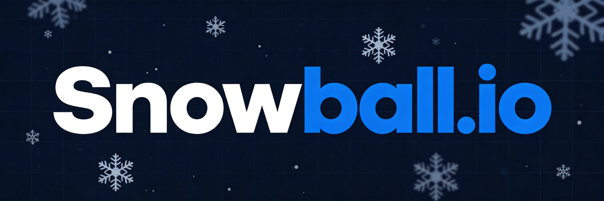
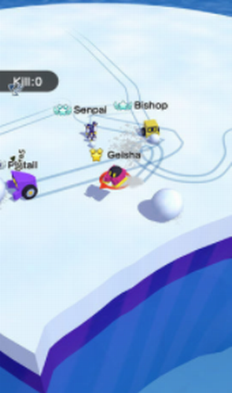
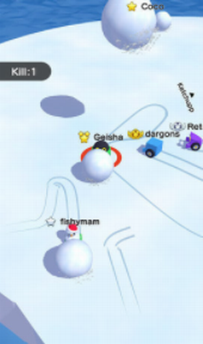

Snowball.io takes the classic winter pastime and cranks it up to eleven. Instead of building snowmen, you're rolling massive snowballs and launching them at other players to knock them off platforms. The concept sounds childish—because it kind of is—but the gameplay is surprisingly addictive. I've spent way too many hours perfecting my throws and figuring out why I keep falling off edges.
🎯 Game Basics

The Objective
Your goal is straightforward: knock other players off the map. You control a character on floating ice platforms, rolling up snow to increase your snowball size, then launching it at opponents. Direct hits push them back. Fall off yourself and you're out.
Snowball Size Matters
The bigger your snowball, the harder you hit. But here's the catch: a massive snowball is harder to control. You trade mobility for power, which creates interesting decisions throughout each match.
- Small snowball - Fast, agile, but weak hits
- Medium snowball - Balanced option for most situations
- Large snowball - Devastating knockback, but sluggish movement
Platform Layout
The arena consists of connected ice platforms. Some are large and stable, others are small and precarious. Watch out for narrow bridges and gaps—these are where most eliminations happen.
🎮 Controls & Mechanics
Movement
Use WASD or arrow keys to move your character. Standard third-person controls—nothing fancy here. Your character moves independently from the snowball, which adds a layer of complexity.
Rolling Snowballs
Walk into snow patches and your character automatically starts rolling. The longer you stay in the snow, the bigger your snowball grows. You can have multiple snowballs rolling behind you, which is key to some advanced strategies.
Throwing
Aim with your mouse and click to throw. The snowball travels in an arc based on your aim. There's travel time, so you need to lead your targets. Holding down the mouse button charges a more powerful throw.
Big snowballs make you top-heavy. Trying to move quickly with a massive snowball is a recipe for falling off edges. Manage your size carefully.
🌱 Beginner Strategies
1. Keep Your Snowball Medium-Sized
Resist the urge to make the biggest snowball possible. Medium snowballs offer the best balance between power and mobility. You'll move faster and be harder to hit.
2. Stay Near the Center
When you're learning, stick to larger platforms in the middle of the map. The edges are death traps—any push from a skilled player sends you flying into the void.
3. Aim for Pushback, Not Kills
Direct kills are hard to pull off. Instead, focus on pushing opponents toward edges. Let gravity do the work. A well-timed hit at the edge of a platform is more valuable than missing a center-platform shot.
4. Watch Your Surroundings
Easy to get focused on combat and forget where you are. I've launched myself off countless platforms while lining up the perfect shot. Always know where the nearest edge is.
⚡ Intermediate Tactics
1. Multiple Snowball Setup
Build two medium-sized snowballs instead of one massive one. You can throw rapidly without waiting for your snowball to regrow. Plus, if you lose one, you still have backup.
2. The Roll-Through
Roll your snowball through opponents to knock them back without throwing. It's faster than aiming and effective in close quarters. Works great when chasing someone or defending yourself.
3. Positioning at Edges
The best defensive position is having your back to a wall or corner. You can't get knocked back further than a wall would allow. Force opponents to come to you.
4. Predictive Aiming
Leading targets gets easier with practice. Watch where players are moving, not where they are. Throw ahead of their path and they'll walk right into it.
🚀 Advanced Techniques

1. The Air Shot
Knock players into the air, then follow up with another shot before they land. This combo is devastating. The second hit during their airtime prevents them from recovering or dodging.
2. Edge Control
Dominate players by controlling space near edges. Position yourself so opponents have nowhere safe to go. Every step toward you is a step toward the abyss.
3. The Bait
Make yourself look vulnerable—stay near an edge with a small snowball. When an opponent gets aggressive to finish you off, they expose themselves. Turn the tables with a well-aimed shot.
4. Momentum Management
Know when to keep your snowball and when to dump it. Dropping a massive snowball suddenly makes you much more mobile. Sometimes shedding weight is the best escape.
5. The Defensive Retreat
When cornered, build up a medium snowball and use it as a shield. Push your snowball toward attackers while backing away slowly. The snowball absorbs hits meant for you while you position for counterattacks.
6. Terrain Exploitation
Different platforms have different characteristics. Narrow bridges force predictable movement—camp these chokepoints. Wide open spaces favor mobile players with good aim. Choose your fights based on terrain advantages.
7. Managing Multiple Opponents
When facing several enemies, prioritize the closest threats. Don't spread your throws thin trying to hit everyone. Take out one opponent completely before moving to the next. Partial damage across multiple players wastes ammunition.
💎 Pro Tips

Practice your arc shots. High arcs let you hit players behind cover or obstacles. Master the parabola and you'll catch people off guard constantly.
Don't ignore the snow patches after respawning. Build up quickly and get back into the action. Every second without a snowball is a second you're vulnerable.
Team modes require coordination. Focus fire on one opponent at a time. Two players getting pushed is better than five players taking half-damage.
Watch for spawn kills. Respawn in safe zones initially. Players often camp near spawn points knowing newcomers are defenseless.
❓ Frequently Asked Questions
How do I make my snowball bigger?
Roll through snow patches for several seconds. Your snowball grows continuously while you're in the snow. Bigger isn't always better—manage size based on your current needs.
Can I throw snowballs at any time?
Yes, but you need at least a small snowball ready. Without one, you're just a helpless character waiting to get pushed off. Always maintain a snowball.
What's the best snowball size for beginners?
Medium. It offers enough power to push opponents effectively while keeping you mobile enough to avoid counterattacks and navigate edges safely.
How do knockbacks work?
Snowball size directly affects knockback force. Direct hits deal maximum knockback. Snowballs that land near (not on) players still deal reduced knockback.
Can I play with friends?
Yes, the game has team modes. Look for party or team options in the game menu to create private matches with friends.
What happens when I fall off?
You respawn at a random safe location on the map with a fresh small snowball. Your previous size and any accumulated progress reset.
📝 Related Games to Try
Enjoy Snowball.io? Check out BrutalMania.io for arena combat action, Zombs Royale for battle royale mayhem, or Surviv.io for more intense survival gameplay.
📝 Conclusion
Snowball.io combines simple mechanics with surprisingly deep combat. The snowball size decisions, positioning at edges, and reading opponent movements all matter. Practice makes perfect—each match teaches you something new about the physics and map layout.
Get out there and start throwing! Watch your step, aim true, and push your opponents into the cold abyss.
Last updated: January 20, 2024
Written by the iogameguide.com team